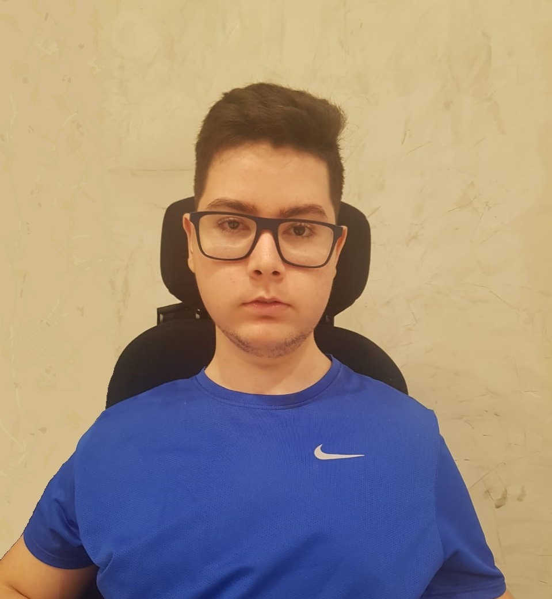
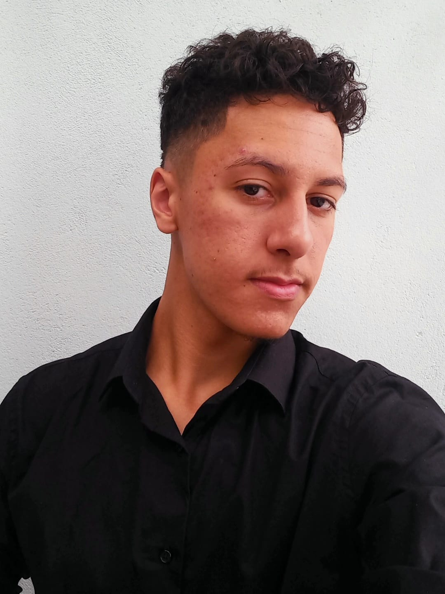
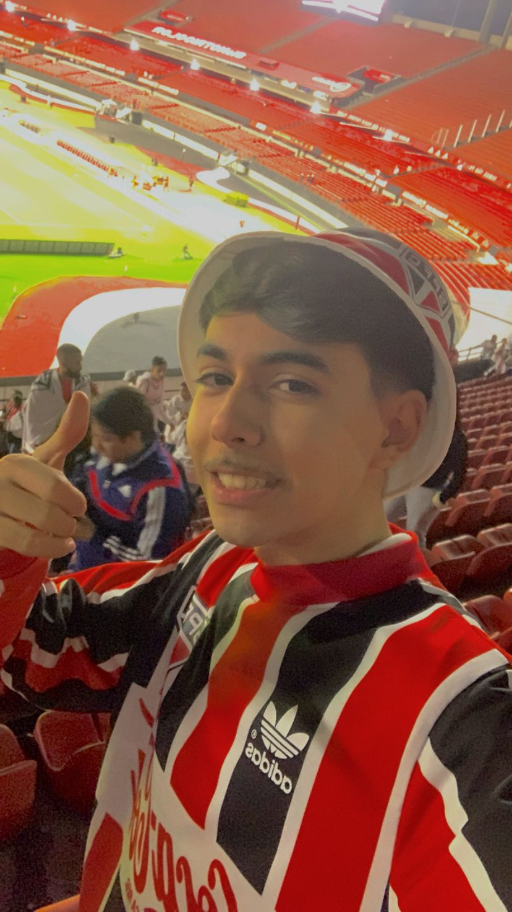
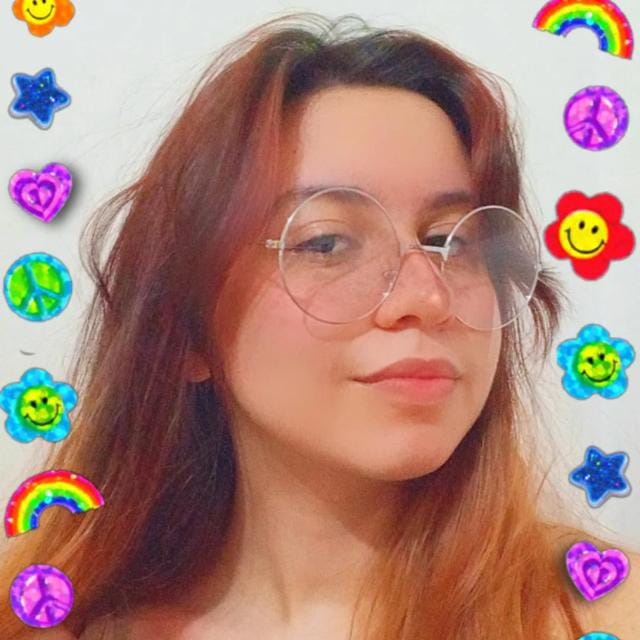
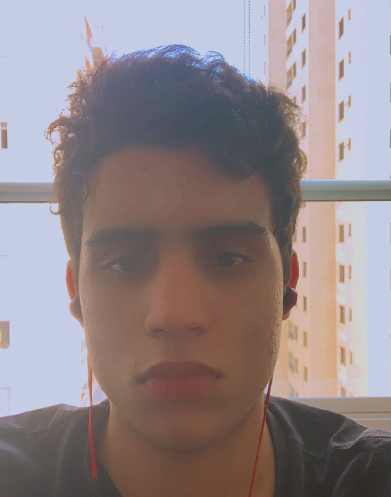
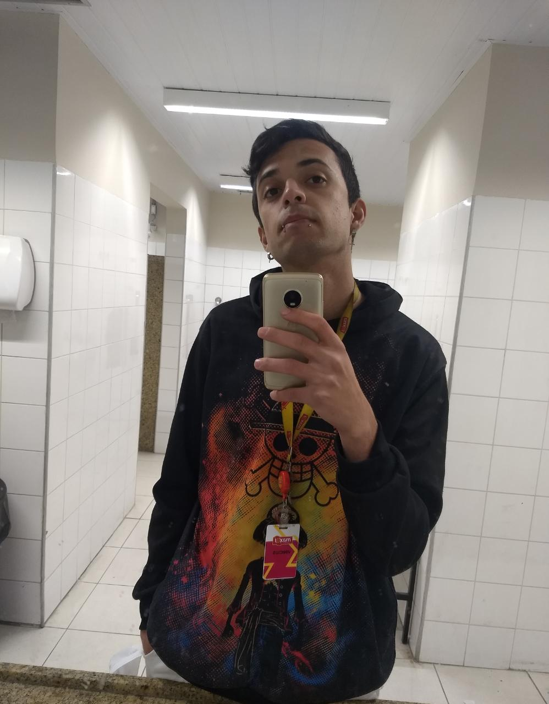

Criadores
André Guilherme Leite Esposito
Atualmente tenho 19 anos, comecei o curso de ciência da computação, mas já trabalho na área como desenvolvedor backend. Eu sou curioso, determinado, tenho facilidade em me comunicar e gosto muito de aprender coisas novas. No tempo livre, curto assistir séries, jogar e passar o tempo com família e amigos.
Brian Pereira Ventura
Sou Brian Pereira Ventura, tenho 18 anos. Técnico em Administração e cursando Ciência da Computação, na UNIP.
Guilherme Tomaz Troglio de Carvalho
Tenho 18 anos, estou cursando Ciência da Computação, na Unip e trabalho em uma loja.
Mariana Reis Guimarães
Está cursando o primeiro semestre de Ciência da Computação e pretende seguir carreira como programadora. Ela é uma estudante dedicada, talentosa e apaixonada pela tecnologia, buscando constantemente aprender e se atualizar na área. Com sua mente analítica e habilidades técnicas, Mariana está determinada a se tornar uma programadora experiente e contribuir para o desenvolvimento de soluções tecnológicas inovadoras.
Thiago Castro Schwab
Sou de são josé dos campos, curso ciência da computação na unip, estou no primeiro semestre.
Vinícius Henrique
Vinicius é um jovem brasileiro de 23 anos, nascido em uma cidade do interior do estado de São Paulo. Ele é conhecido por ser uma pessoa gentil, comunicativa e dedicada em tudo o que faz.